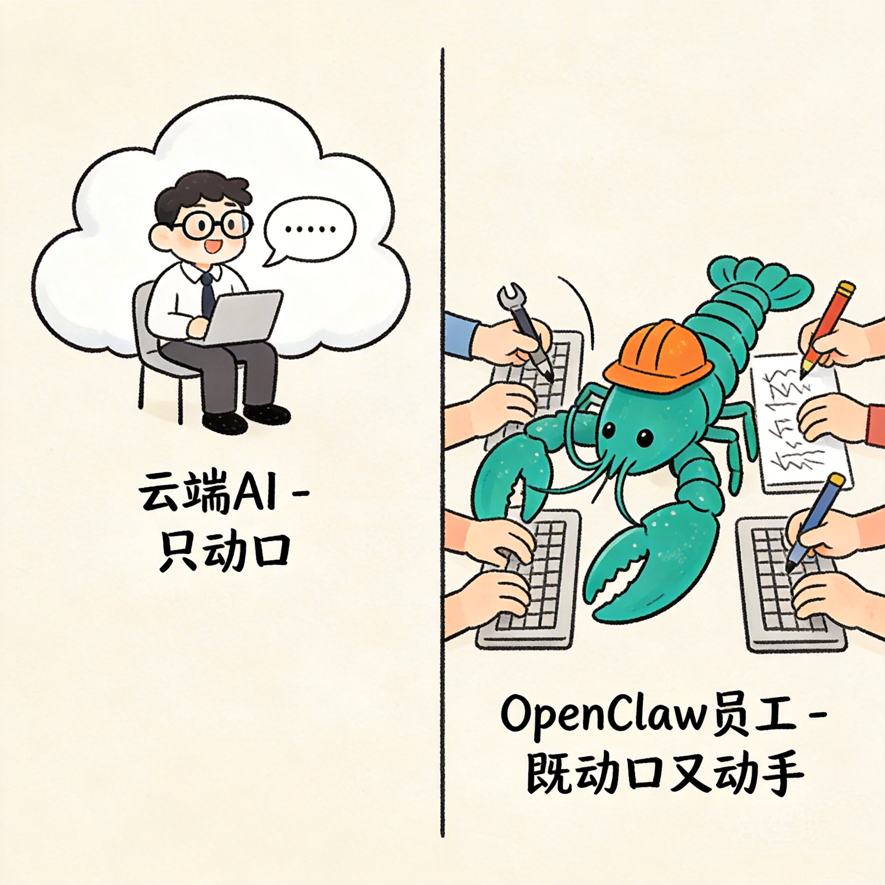
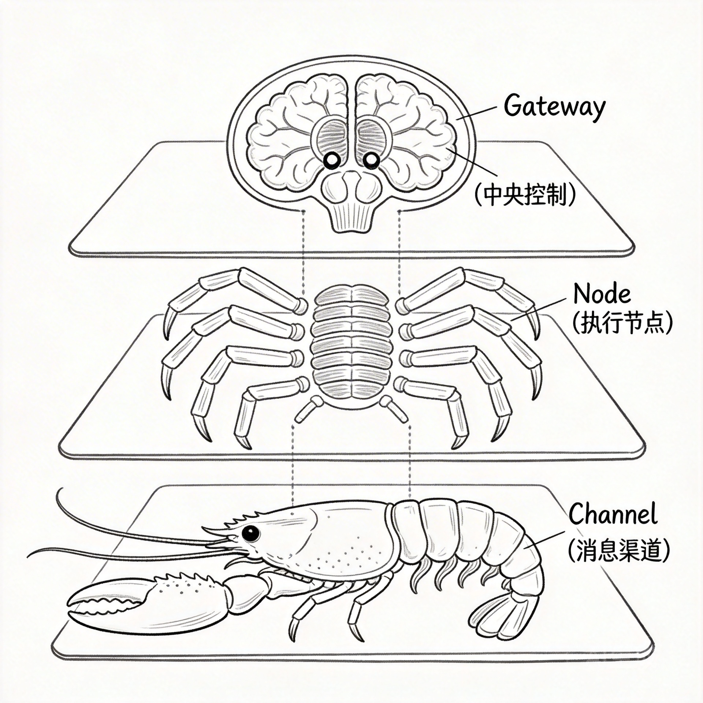

初识这只"神虾" —— 它是谁？能干啥？
OpenClaw 不是大模型，而是运行在你设备上的智能界面。ChatGPT 是"顾问"（只动口），OpenClaw 是"员工"（既动口又动手）。
1.1 别再把"龙虾"当聊天机器人
很多人第一次听说 OpenClaw 时，会误以为它是另一个 ChatGPT 或 Claude。但实际上，OpenClaw 的定位完全不同。它不是一个大模型，而是一个运行在你本地设备上的智能界面（Interface）。

这就像云游戏 vs 本地主机的区别：云游戏所有计算都在云端，画面通过网络传给你；而本地主机直接在你的设备上运行。OpenClaw 就是后者，它直接操作你的电脑，读取你的文件，运行你的程序。
1.2 "养虾"文化简史
龙虾（OpenClaw）最初是 Anthropic 的 Claude Code 的开源替代品。Claude Code 仅限于终端使用，而 OpenClaw 让它接入各种社交渠道——Telegram、WhatsApp、Discord、甚至飞书。
"Claude 是顾问，只动口；OpenClaw 是员工，既动口又动手。"
在短短 4 个月内，OpenClaw 的 GitHub Star 数突破 28 万，正式超越 React 成为全球第一的软件项目。
1.3 传统AI vs 神虾员工

☁️ 传统云AI
- 只提供文本回复
- 不能操作你的设备
- 每次对话都是独立的
- 需要手动复制粘贴
🦞 OpenClaw
- 能执行系统命令
- 能读写本地文件
- 有长期记忆能力
- 能主动发起任务